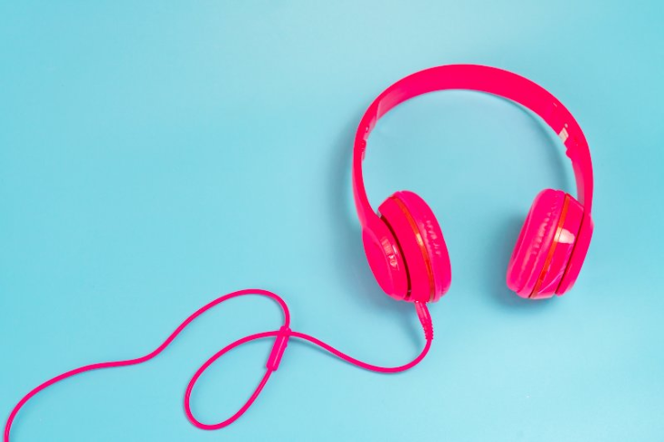

ABOUT ME
In this day and age, many people are inseperable from their mobile devices. Indeed, the infrastructure and framework of entire nations are built upon software. I first became fascinated with coding at the age of sixteen, and my appreciation of its applications have only grown as I have progressed through my education in the field. My computer science courses have helped me to better understand the logic and complex circuitry underlying the ability to convert code to action, and this is why I am persuing my post-graduation in Toronto, Canada.
Educational Background
Born and raised in Gujarat, India where I completed my schooling and graduation. I graduated from GtU in Computer Science. Then, I moved to Toronto for my post-graduation.
I am currently persuing post-graduation diploma in Mobile Application Design and Development at Lambton Colllege, Toronto.
| Degree | Institution | Passing Year |
|---|---|---|
| Post-Graduation Diploma | Lambton College, Toronto | Persuing |
| Bachelor of Engineering | Gujarat Technological University | 2014 |
Hobbies
Listening Music

Music is a fundamental attribute of the human species. Virtually all cultures, from the most primitive to the most advanced, make music. It's been true through history, and it's true throughout an individual's lifespan. In tune or not, we humans sing and hum; in time or not, we clap and sway; in step or not, we dance and bounce.
Listening to music improves our mental well-being and boosts our physical health in surprising and astonishing ways. If we take a music lesson or two, that musical training can help raise our IQs and even keep us sharp in old age.
Enjoyment goes far beyond the present moment, as it directly influences the outcome of our hormones and cognitive functioning. While research has suggested that people who play instruments are smarter, there are also plenty of benefits for the music enthusiasts.
Benifits:
- Music Lowers Stress and Improves Health
- Music Helps You Sleep Better
- Music Strengthens Learning and Memory
Travelling

Maybe you’re not looking to escape your problems.
But everyone can benefit from a break from our usual diets of all work and no play.
You may not realize how much you need to disconnect from the ever-present pressure of being available by phone, email or social media.
A restful vacation is just what you need to rejuvenate yourself.
You might feel like you’re stuck in a rut in your daily life. Or you’re yearning for something exciting and different. You’re craving new experiences and new challenges. Travel is the ideal place to test yourself. It pushes people to their limits and gets them outside their comfort zone.
You’ll discover how resourceful you are when you’re exposed to new places, people and experiences. Maybe it’s finding your way around a busy city. Or ordering a meal when you don’t speak the language. Or zip-lining. You’ll feel pride when you finish your trip successfully. Overcoming challenges will bring you joy and energy for future tests. You’ll realize how capable you are and build your confidence.
Benefits:
- It fosters personal growth
- You Get to Experience Different Cultures
- Because an ever-changing environment is stimulating, refreshing and brings endless learning opportunities
Reading
The more that you read, the more things you will know. The more that you learn, the more places you’ll go. Diving into a good book opens up a whole world of knowledge starting from a very young age. Exposure to vocabulary through reading (particularly reading children’s books) not only leads to higher score on reading tests, but also higher scores on general tests of intelligence for children. Plus, stronger early reading skills may mean higher intelligence later in life.
Not only does regular reading help make you smarter, but it can also actually increase your brain power. Just like going for a jog exercises your cardiovascular system, reading regularly improves memory function by giving your brain a good workout. With age comes a decline in memory and brain function, but regular reading may help slow the process, keeping minds sharper longer.
Benifits:
- Reading Makes You More Empathetic
- Reading Keeps Your Brain Healthy
- Reading Helps You Sleep Better